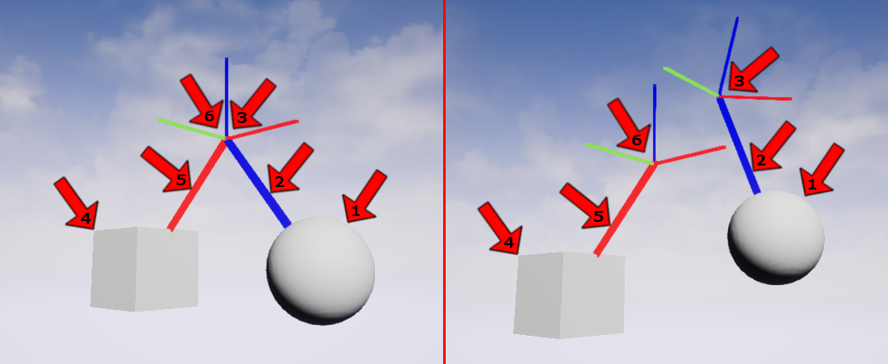
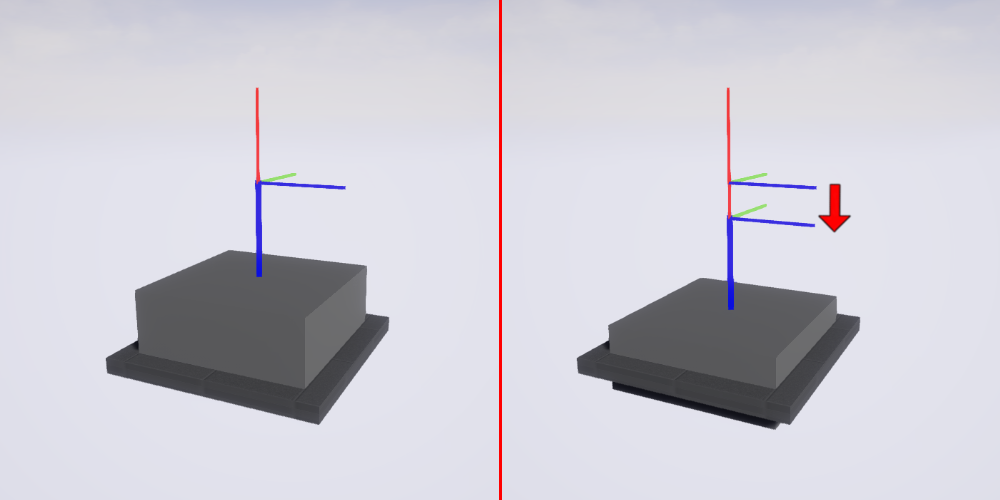
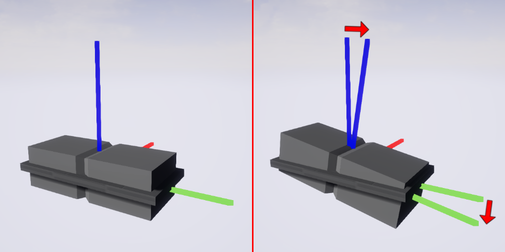

|
HaptX SDK
3.0.3
SDK for HaptX Gloves G1
|
Loading...
Searching...
No Matches
|
HaptX SDK
3.0.3
SDK for HaptX Gloves G1
|
Descriptions and recommended use of Unreal Haptic Primitive classes.
See Unreal Haptic Primitives for low-level documentation.
A Haptic Primitive is any interaction in a game world that contains at least one UHxConstraintComponent or child component of it.
UHx1DTranslatorComponents and UHx1DRotatorComponents and the Dofs property on UHxConstraintComponent s.We highly recommend disabling grasping on dial-like interactions. This can be accomplished with a UHxPhysicalMaterial on the dial's UStaticMeshComponent , and is done for you on templates available in our game plugins.
UHxConstraintComponentUHxConstraintComponent is the core class from which all Haptic Primitives are based. It inherits from UPhysicsConstraintComponent and adds features that make it easier to design and build complex interactions.
These features include:
updateConstraint() settings without reforming the constraintfreeze() and unfreeze() the constraint without affecting other settingsanchor1The UHxConstraintComponent class gives developers greater control their interactions by providing multiple layers of customizable and parallelizable classes. See Table 1 for a list of all base classes and Figure 1 for an example of how they appear in the Details panel.
| # | Class |
|---|---|
| 1 | UHxDof |
| 2 | UHxDofBehavior |
| 3 | UHxPhysicalModel |
| 4 | UHxStateFunction |
UHxConstraintComponent s and all related classes operate in constraint space.
The concept of constraint space can be confusing the first time you encounter it. It works like this:
anchor1 gets defined as the location and rotation of the constraint with respect to component1, and anchor2 gets defined as the location and rotation of the constraint with respect to component2 (Figure 2, Left ). These anchors are fixed with respect to their components so long as the constraint exists.anchor2's frame, making component2 the parent and component1 the child. The location and rotation of the anchor1 frame with respect to the anchor2 frame at any point (keeping in mind that both are able to move around the world, Figure 2, Right ) get used to drive every calculation inside the UHxConstraintComponent .The formation of constraint space happens independently of the orientations of the constrained components. See Figure 3 for an example of a button translating in the constraint space -X direction as defined by the orientation of the constraint (not either of the constrained components). See Figure 4 for a similar example of a rocker switch rotating in the constraint space -X direction.
Note: if the bScaleLinearLimits property of the UHxConstraintComponent 's FConstraintInstance is true, then translations in constraint space are scaled relative to the initial world scale of the constraint when the constraint was formed.
| # | Element | Description |
|---|---|---|
| 1 | Component1 | The first constrained component (child) |
| 2 | Anchor1 | The position and rotation of the constraint with respect to component1 when the constraint was formed |
| 3 | Anchor1 frame | The space described by anchor1 |
| 4 | Component2 | The second constrained component (parent) |
| 5 | Anchor2 | The position and rotation of the constraint with respect to component2 when the constraint was formed |
| 6 | Anchor2 frame (constraint space) | The space described by anchor2 |

UHxConstraintComponents are driven by the position and rotation of anchor1 frame in anchor2 frame, AKA constraint space (Right).

-X direction (Left). The button after it has translated in the constraint space -X direction (Right).

-X direction (Left). The rocker switch after it has rotated in the constraint space -X direction (Right).
PrimitiveStateDebugger blueprintThe PrimitiveStateDebugger blueprint is included in the plugin to make using and debugging UHxConstraintComponent s easier. Add one to your level by spawning the blueprint located in the HapticPrimitives folder of the plugin in the Content Browser . Set the value of the Haptic Primitive Actor Ref field to the actor that owns the UHxConstraintComponent you're trying to debug and the PrimitiveStateDebugger blueprint will show you position information for every UHxDof that exists, as well as the current states of any UHxStateFunction s found on those UHxDof s.
UHx1DTranslatorComponent and UHx1DRotatorComponentMany interactions only operate in one degree of freedom and do not require the full power and flexibility of UHxConstraintComponent s. For these simpler interactions we recommend using UHx1DTranslatorComponents or UHx1DRotatorComponents.
These classes maintain the features of UHxConstraintComponent in the degree of freedom that they operate in and add additional parameters for convenience. These parameters include:
The Damping value gets passed to the relevant UPhysicsConstraintComponent property based on how the constraint is configured, so it only applies to motions of the components with respect to each other. Contrast this to UPrimitiveComponent damping which applies to the gross motion of a component in the world.
UHxDofThe UHxDof class represents a single degree of freedom and brings together sets of UHxDofBehavior s and UHxStateFunction s. It includes functions that allow UHxDofBehavior s and UHxStateFunction s to be found by name (Figure 5 ), as well as a function that returns the current constraint space position along its degree of freedom (Figure 6 ). Note that UHxDofs will only be updated by their associated UHxConstraintComponent s if they have at least one behavior or state function, or their Force Update flag is set to true.
UHxDofBehaviorThe UHxDofBehavior class represents a physical behavior that operates in a single degree of freedom (see UHxDof). The class contains many features, but its primary purpose is to produce a desired physical behavior through the application of forces or torques based on the constraint space position along its degree of freedom. See Table 3 for the types of UHxDofBehaviors included in the plugin and their desired behaviors. The full list of features includes:
getForceTorque() and tryGetTarget() functionsUHxPhysicalModelIf a behavior requires stabilization you may leverage different UPhysicsConstraintComponent properties (which may be found in the Details panel of your UHxConstraintComponent depending on whether the behavior is operating on a linear degree of freedom or an angular one. The key property for linear behaviors is Linear Motor → Velocity Target → Strength and for angular behaviors is Angular Motor → Target Velocity → Strength . In both cases the velocity target matching the axis of the behavior must be enabled and set to 0.0 for this to apply. In the angular case the Angular Drive Mode must also be set to Twist and Swing . For example, to stabilize behaviors in the X-Linear degree of freedom you would enable the X component of Linear Motor → Velocity Target , ensure that it has a value of 0.0 and experiment with the Strength property until you find a value that you like.
Note: when using UHx1DTranslatorComponents or UHx1DRotatorComponents , the value of the Damping property automatically populates and configures the correct UPhysicsConstraintComponent properties.
| Behavior Type | Description |
|---|---|
UHxDofDefaultBehavior | Produces a behavior about the resting position (0.0). Most useful when combined with a UHxPhysicalModel to define the entire force/torque profile for a degree of freedom. |
UHxDofTargetPositionBehavior | Produces a behavior about a target position. |
UHxDofDetentBehavior | Mimics the mechanical behavior of detents. See relevant section for more detail. |
UHxDofBehavior.
UHxDofDetentBehaviorThis class is inspired by detents, which are small hitches in motion commonly used to add haptic feedback to volume dials, multi-position toggle switches, and other devices. The class also serves as an example of how the base UHxDofBehavior class can be overridden to produce different behaviors. In this case, the desired behavior is that the constraint always drive toward the constraint space detent that is nearest. The class exposes a Detents array in the Details panel which contains the list of each of the constraint space position that constitutes a detent.
UHxPhysicalModelUHxPhysicalModels are simple classes that represent models that UHxDofBehavior s can use to drive toward target positions. They are given the constraint space distance from any arbitrary target position described by the UHxDofBehavior , and they output the signed magnitude of the force that should be applied to the Primitive based on the model they represent. Override the base UHxPhysicalModel class to define an arbitrary model and your subclass will show up in the Details panel as an option for the Model property of every UHxDofBehavior . See Table 4 for a list of the default models included in the plugin.
| Model | Description |
|---|---|
UHxConstantModel | Generates a constant restoring force/torque |
UHxSpringModel | Generates a spring force/torque |
UHxCurveModel | Generates the force/torque defined by a given UCurveFloat |
UHxPhysicalModels.
UHxStateFunctionUHxStateFunctions break constraint space down into integer states, and fire their on_state_change_ events every time their states change (Figure 7 ). Most UHxStateFunctions are expected to associate states uniquely for any given constraint space position; however, the base class may be overridden to implement any state logic that works solely off per-frame constraint space positions. See Table 5 for a list of the default UHxStateFunctions included in the plugin.
| Class name | Description |
|---|---|
UHx2StateFunction | Divides constraint space into two states at a given transition position |
UHx3StateFunction | Divides constraint space into three states at given low and high transition positions |
UHxNStateFunction | Divides constraint space into N states where any given position is associated with the nearest transition position |
UHxCurveStateFunction | Each constraint space position is associated with the rounded output value of a given UCurveFloat |
UHxStateFunctions.